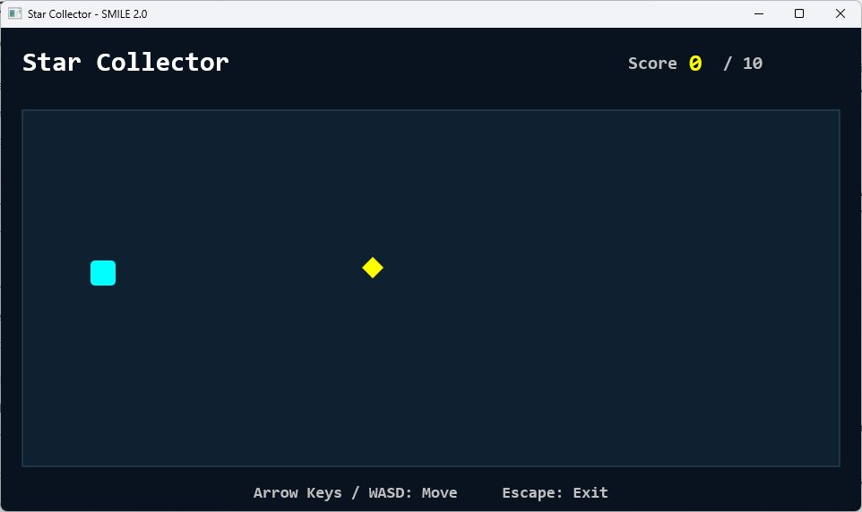
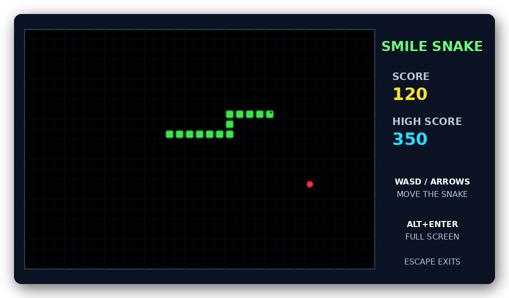
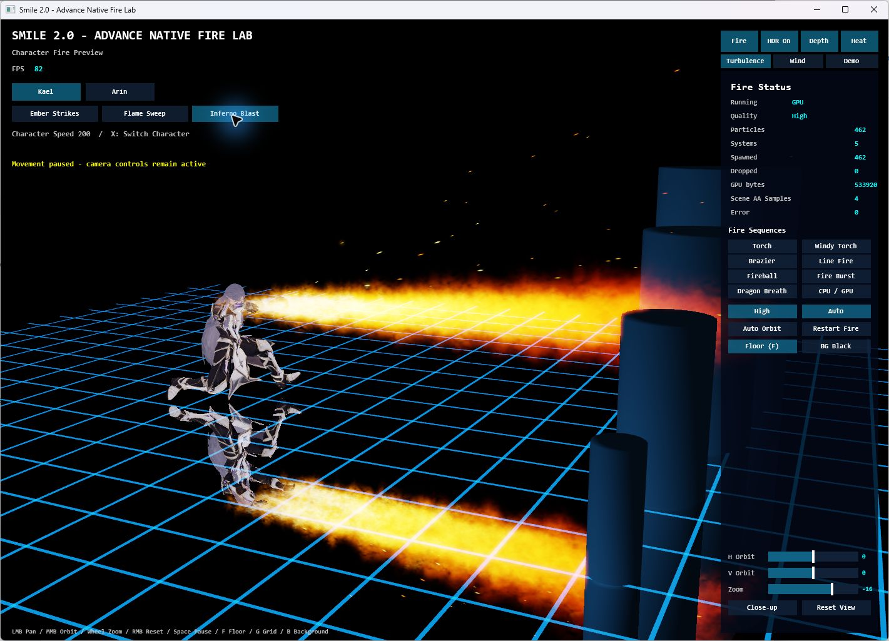
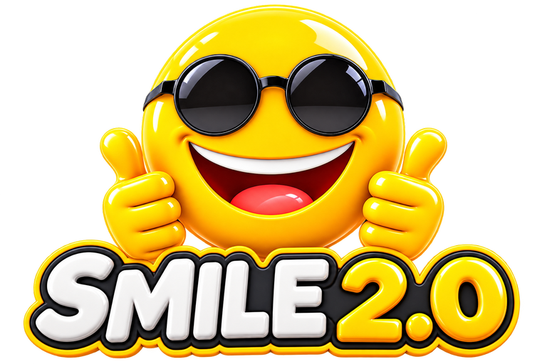

Dim PlayerX As Number
Dim PlayerY As Number
PlayerX = 160
PlayerY = 100
' A position becomes a player.
Fill Rectangle PlayerX, PlayerY, 32, 32, CYANTry the sliders. Bigger X moves right. Bigger Y moves down. This browser illustration explains the drawing statement; you’ll run complete SMILE programs in the lessons.
Small steps. Playable ideas.
Follow the path, or jump to what you need.
Meet your new language.
Set up SMILE, run a first program, and understand what each line does.
Make something run → 02 / Learn the building blocksGive your game a memory.
Store health, names, and scores. Turn values into decisions and actions.
Learn values & variables → 03 / Build a real gameYour first Star Collector.
Move a player, collect stars, count points, and restart. Download the complete code.
Build the game → 04 / Go furtherAn arena. Three elements.
Create a 3D stage, then bring Fire, Water, and Earth effects into the scene.
Explore arena & VFX →A game is a story that repeats.
Each frame asks the same three questions. What did the player do? What changed? What should they see?
You don’t have to understand everything at once. Change one value. Run it. Notice the difference. That’s programming.
Start small. See how far it goes.
These are real projects from SMILE 2.0. The same ideas—values, loops, and reusable code—grow from a tiny game into a complete scene.

Build this: Star Collector

Next challenge: Snake

Make an effect come alive

Build a scene with structure
Looking for a particular tool?

Simple Modern and Intuitive Language for Everyone.
Created by Louiery R. Sincioco. This guide teaches the current language through native Windows examples, from your first line to your own game.